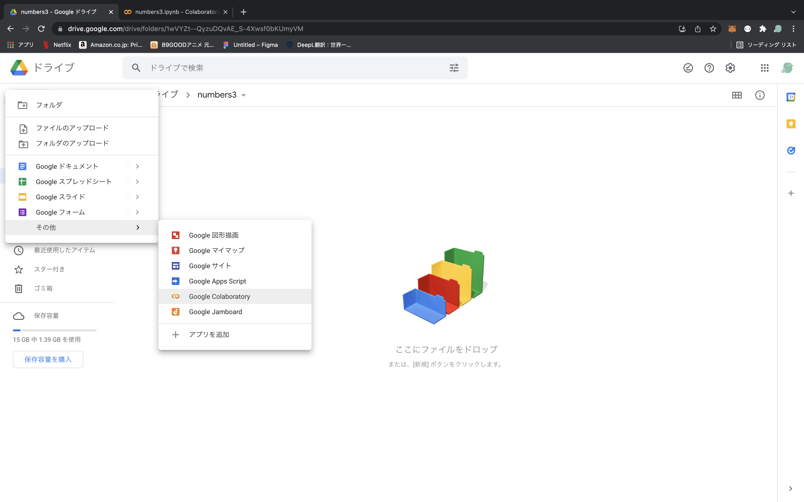
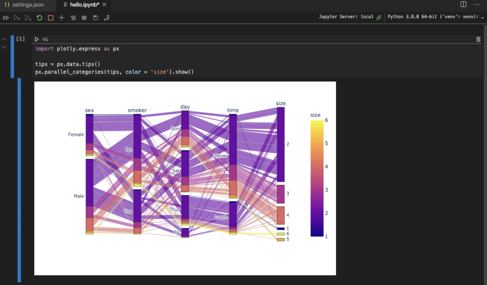

python環境
google colaboratory
pysonを環境構築なしで使用できるツール
google colaboratoryとは
youtube_キノコード / プログラミング学習チャンネル
jupyter notebook with vs code
jupyter notebook を vscodeで使用する方法
virtualenvをインストールする
似たようなライブラリがたくさんあるけどvirtualenvが使い易い
gitignoreの設定が最初からされている
# 初回のみ
pip install virtualenv
仮想環境に入るためのファイルを作成
# プロジェクト名はない方が扱いやすい
virtualenv (プロジェクト名)
# or
virtualenv .
# or (pythonのバージョンを指定して作成)
virtualenv -p python3.9 venv39
仮想環境に入る
source bin/activate
仮想環境に入った状態でpip install (ライブラリ)で環境が分離される
仮想環境から出る
deactivate
Jupyterのパッケージをインストール
pip install jupyter
pip install pandas lxml plotly-express
パッケージをインストール後はrequirements.txtに書き出す
git clone 後に、簡単にパッケージをインストールするために必要
pip freeze > requirements.txt
設定ファイルを追加する
.vscode/settings.jsonファイルを作成し、内容を以下の通りにする
{
// PythonのPATHをワークスペースの仮想環境にする
"python.pythonPath" : "${workspaceFolder}/venv/bin/python",
// 仮想環境にインストールしたファイルは監視対象から除外する
"files.watcherExclude" : {
"**/venv/**" : true
}
}
ファイルを作成する
hello.ipynbファイルを作成する
import plotly.express as px
tips = px.data.tips()
px.parallel_categories(tips, color = 'size').show()
実行する
実行時の選択肢は現在のプロジェクトを選択

結果
git clone 後の処理
virtualenvを作成
virtualenv .
バーチャル環境に入る
source bin/activate
requirement.txtからpipでパッケージを入れる
pip install -r requirements.txt
jupyter notebook in vscode で実行する場合はカーネルを選択を”venv(仮想環境名)”に変更
numbers3
numbers3の当選結果をデータ分析
pythonのbeautifulsoup4とseleniumを使用してスクレイピングでデータ収集し,結果をGoogleSpleadSheetに書き込み。githubリンクはこちら
※使用方法はreadme.mdに記載してます
GoogleSpleadSheetに書き込んだデータに毎日データを追加する。 GoogleSpleadSheetのリンクはこちら github actionsで毎日の更新処理を自動化、ラインメッセージボットで自動配信
numbers4
numbers3の当選結果をデータ分析
pythonのbeautifulsoup4とseleniumを使用してスクレイピングでデータ収集し,結果をGoogleSpleadSheetに書き込み。githubリンクはこちら
※使用方法はreadme.mdに記載してます
GoogleSpleadSheetに書き込んだデータに毎日データを追加する。 GoogleSpleadSheetのリンクはこちら github actionsで毎日の更新処理を自動化、ラインメッセージボットで自動配信
roto7
pythonのbeautifulsoup4とseleniumを使用してスクレイピングでデータ収集し,結果をGoogleSpleadSheetに書き込み。githubリンクはこちら
予測不可
scraping
参考資料
Beautifulsoup,Seleniumを使ったスクレイピング
作成途中
-
例 :
必要なライブラリをインポート
import chromedriver_binary from bs4 import BeautifulSoup from selenium import webdriver from selenium.webdriver.chrome.options import Options import time import json import csv# 初期設定 opts = Options() opts.headless = True driver = webdriver.Chrome(options=opts) # ------------------------------------------------------------------------------------------------------------------------------------------------------------------------- # （B表）A表以前の当せん番号 # URLを指定して読み込み load_url = 'https://www.mizuhobank.co.jp/retail/takarakuji/check/numbers/backnumber/index.html' driver.get(load_url) html = driver.page_source.encode('utf-8') soup = BeautifulSoup(html, 'html.parser') # HTMLのテーブルとクラスを指定して取得 tables = soup.find("table", class_="typeTK js-backnumber-b") time.sleep(5) # その中からaタグを取得 linksB_href = tables.find_all("a") time.sleep(5) # print(linksB_href) # aタグのhrefを取得して配列に挿入 list = [] for link in linksB_href: href = link.get('href') text = link.get_text() if href and text: list.append([link.get('href'),text]) # print("list") print("list") print(list) # exit() # ------------------------------------------------------------------------------------------------------------------------------------------------------------------------- # 取得したurlをfor文で回してデータを当選データを取得 resultsB = [] for key, i in enumerate(list): load_url = "https://www.mizuhobank.co.jp"+i[0] driver.get(load_url) time.sleep(10) html = driver.page_source.encode('utf-8') soup = BeautifulSoup(html, 'html.parser') time.sleep(2) if key < 135: # time.sleep(1) tables = soup.find("div", class_="spTableScroll sp-none") else: # time.sleep(2) tables = soup.find("div", class_="spTableScroll js-lottery-backnumber-list sp-none") tables = tables.select('tbody tr') # time.sleep(1) for data in tables: around = data.find('th').get_text() print("around") print(around) date = data.findChildren("td")[0].get_text() result = data.findChildren("td")[1].get_text() resultsB.append([around,date,result]) print("resultsB") print(resultsB) # exit() # ------------------------------------------------------------------------------------------------------------------------------------------------------------------------- # （A表）先月から過去1年間の当せん番号 # URLを指定して読み込み load_url = 'https://www.mizuhobank.co.jp/retail/takarakuji/check/numbers/backnumber/index.html' driver.get(load_url) html = driver.page_source.encode('utf-8') soup = BeautifulSoup(html, 'html.parser') tables = soup.find("table", class_="typeTK") time.sleep(10) linksA_tr = tables.find_all("tr") time.sleep(10) # aタグのhrefを取得して配列に挿入 list = [] for key, link in enumerate(linksA_tr): th = link.find('th').get_text() td = link.findChildren('td')[0] href = td.find('a').get("href") if href and th: list.append([href, th]) # print(list) # exit() # ------------------------------------------------------------------------------------------------------------------------------------------------------------------------- resultsA = [] # 取得したurlをfor文で回してデータを当選データを取得 for key, i in enumerate(list): load_url = "https://www.mizuhobank.co.jp"+i[0] driver.get(load_url) time.sleep(10) html = driver.page_source.encode('utf-8') soup = BeautifulSoup(html, 'html.parser') time.sleep(10) tables = soup.find_all("table", class_="typeTK") for table in tables: thead = table.find("thead") around = thead.findChildren("th")[1].get_text() tbody = table.find("tbody") date = tbody.findChildren("tr")[0].find("td").get_text() result = tbody.findChildren("tr")[1].find("td").get_text() resultsA.append([around,date,result]) print("resultsA") print(resultsA) # exit() # ------------------------------------------------------------------------------------------------------------------------------------------------------------------------- # 今月分のデータ取得 resultsThis = [] # URLを指定してデータを取得 load_url = "https://www.mizuhobank.co.jp/retail/takarakuji/check/numbers/numbers3/index.html" driver.get(load_url) time.sleep(10) html = driver.page_source.encode('utf-8') soup = BeautifulSoup(html, 'html.parser') time.sleep(10) tables = soup.find_all("table", class_="typeTK") for key, table in enumerate(tables): time.sleep(1) thead = table.find("thead") around = thead.findChildren("th")[1].get_text() tbody = table.find("tbody") date = tbody.findChildren("tr")[0].find("td").get_text() result = tbody.findChildren("tr")[1].find("td").get_text() resultsThis.append([around,date,result]) print("resultsThis") print(resultsThis) # exit() # ------------------------------------------------------------------------------------------------------------------------------------------------------------------------- # 全てのデータを結合、dict化、ソートし、csvファイルに保存 TOTALRESULT = resultsB + resultsA + resultsThis # print("TOTALRESULT結合") # print(TOTALRESULT) # TOTALRESULT = ["第1427回","2004年10月29日","7720"],["第10回","2004年10月29日","7723"],["第1428回","2004年10月29日","7721"],["第1429回","2004年10月29日","7782"],["第1回","2004年10月29日","7723"] keyName = ["time", "date", "result"] TOTALRESULT = [dict(zip(keyName,item)) for item in TOTALRESULT] for key,i in enumerate(TOTALRESULT): s2 = i["time"].translate(str.maketrans({'第': '', '回': ''})) # print(s2) TOTALRESULT[key]["time"] = int(s2) TOTALRESULT = sorted(TOTALRESULT, key=lambda x: x['time']) # ✨"useData"をcsvファイルに保存 file_path = "./allData.csv" with open(file_path, 'w') as outfile: wr = csv.DictWriter(outfile, fieldnames = keyName) wr.writeheader() wr.writerows(TOTALRESULT) exit()
バージョン管理
googleChromeのバージョンを確認してそれにあったgoogleDriveのバージョンをインストール
エラー
[OSError: [Errno 86] Bad CPU type in executable: 'chromedriver']
mac初期化後に起こったこのエラーもChromeのバージョンとパッケージのバージョンのズレが原因と思ったが違うみたい ⇦ 少し違う
ログインターミナルをbashからzshに変更したのが原因と思われる ⇦ 違った
解決 ⇨ Chromeドライバーのインストールができていなかった
ChromeドライバーってChromeの事と勘違いしてた。ドライバーはプログラムみたいなやつ。 インストールしてpathを通すのが普通だと思いますが、今回はプロジェクトフォルダに移動させて使います
理由 >> スクレイピング時にしか使わないと思うのでプロジェクト毎に管理する
記述を変更
driver = webdriver.Chrome(options=opts)
↓
driver = webdriver.Chrome("./chromedriver",options=opts)
↑この処理でローカルでは実行できたがリモートではエラーになる
少し気に食わないのでまだ実装してません
chromedriverをインストールするならbrewで実装
なるべくChromeは最新バージョンで実装
chromeはバージョンアップが早いのでできるだけオートでバージョンを管理したい
リモートとローカル両方で動くようにしたい
scrapy
projectの始め方
// scrapyをインストール
pip install Scrapy
// プロジェクトの作成
scrapy startproject levtech
// levtechフォルダが表示されるまで時間がかかる
cd levtech
// プロジェクトの管理
scrapy startproject myproject [project_dir]
----MAC バージョンアップ後の処置----
brewコマンド
export PATH=/opt/homebrew/bin:/usr/local/bin:$PATH
caskコマンドの仕様変更
https://www.mathkuro.com/mac/brew-cask-command-error/
googleChromeのバージョンを確認してそれにあったgoogleDriveのバージョンをインストール
https://pypi.org/project/chromedriver-binary/#history
numpy
NumPy配列ndarrayの表示形式（桁数や指数表記、0埋めなど）を指定
NumPy配列ndarrayとPython標準のリストを相互に変換
Pandas
よく使う処理
import numpy as np import pandas as pd import matplotlib.pyplot as plt
CSVの読み込み
df = pd.read_csv('data.scv')
# 先頭の5件
df.head(5)
# 末尾の5件
df.tail(5)
# ランダムに5件
df.rand(5)
欠損値の取得
df.isnull().sum()
欠損値除去
df.shape()
df.dropna()
欠損値を0に変換
df_zero = df[["time"]].fillna(0)
df_zero
欠損値を平均値に変換
# 元々のデータ型がstrだったのでstrの平均値は求められない
# int型に変換しようと思っても欠損値=NANなのでintにならない
df_mean = df[["time"]].fillna(0)
まとめ
df.mean() >> 平均
df.std() >> 標準偏差
df.isnull().sum() >> 平均
columnをカウント(何が何個)
df["result"].value_counts()
gspread
接続方法
よく使う処理
よくあるエラー
機械学習について
scikit-learn
よく使う処理
pizaでよく使う
inputの取得 inputの取得方法
N = int(input())
a = input().split(' ')
X, Y, Z = input().split()
# or
a, b, c = map(int, input().split())
# or
input_list = list(map(int, input().split(",")))
print(input_list)
line = []
for i in range(10):
line.append(input())
line = [input() for i in range(10)]
print(line)
list(map(int, リスト))
配列の操作
配列の置換
```py
print([1, 2, 3])
print([4, 5, 6])
print([7, 8, 9])
# 右回転
S = [[1, 2, 3], [4, 5, 6], [7, 8, 9]]
for x in zip(*S[::-1]):
print(*x,sep='')
# 左回転
S = [[1, 2, 3], [4, 5, 6], [7, 8, 9]]
T_S = list(zip(*S))
for x in T_S[::-1]:
print(*x,sep='')
```